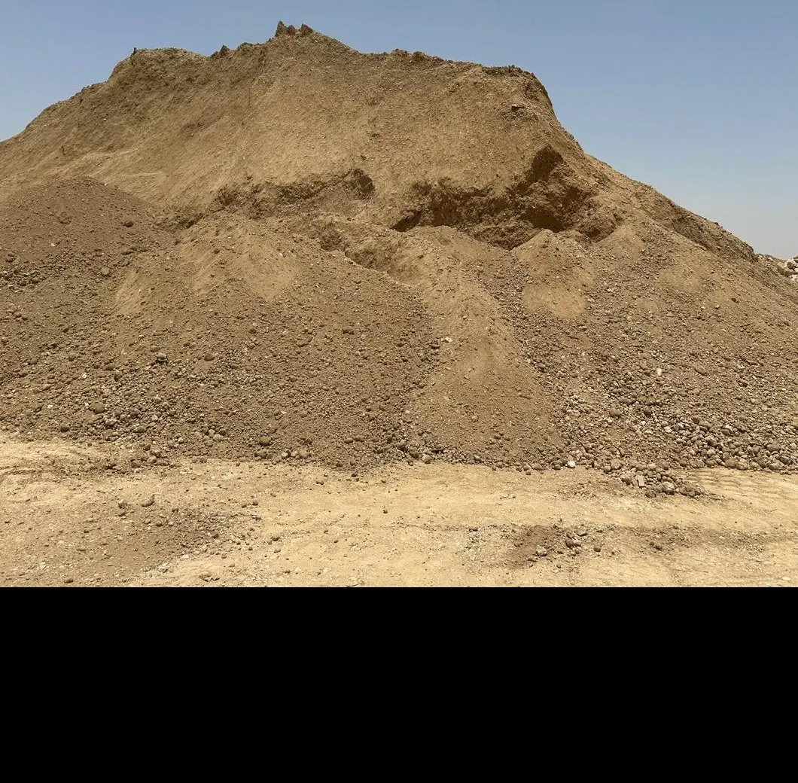
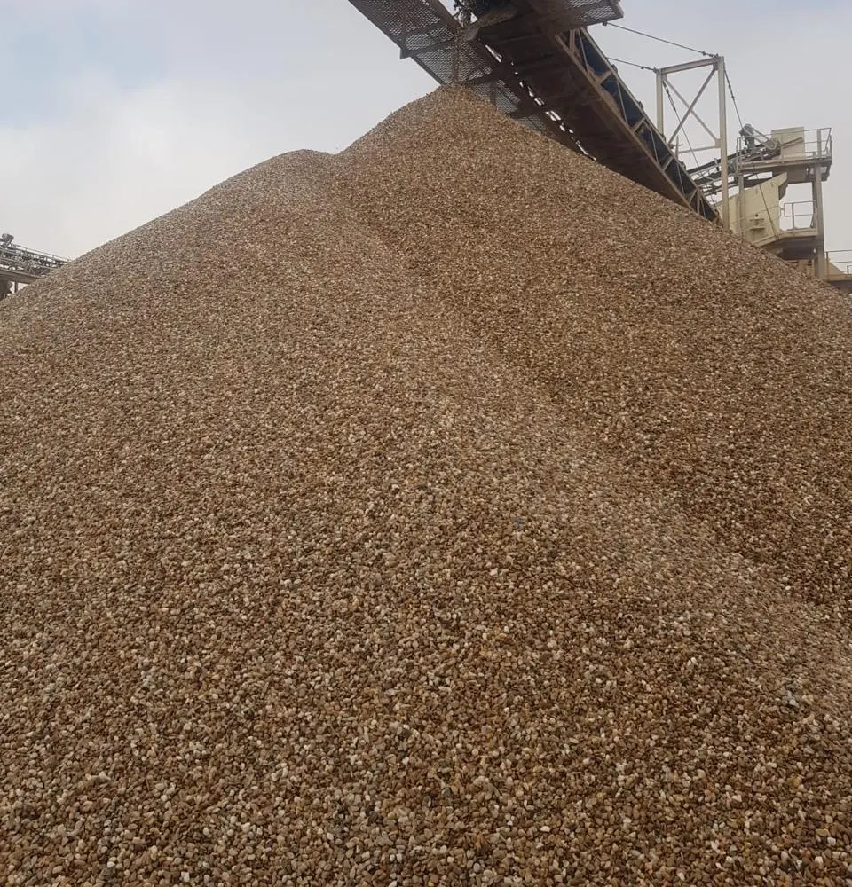
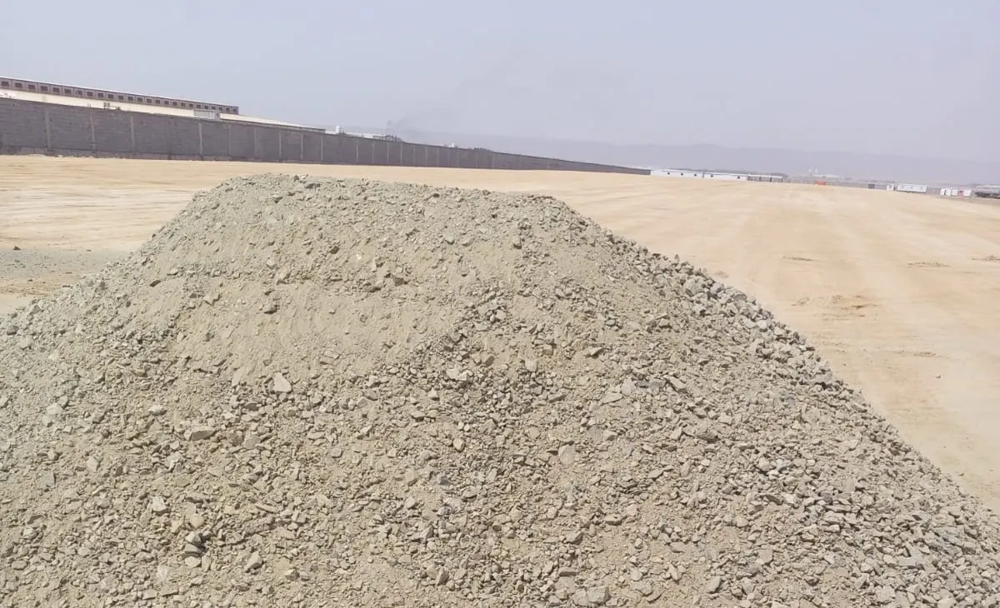
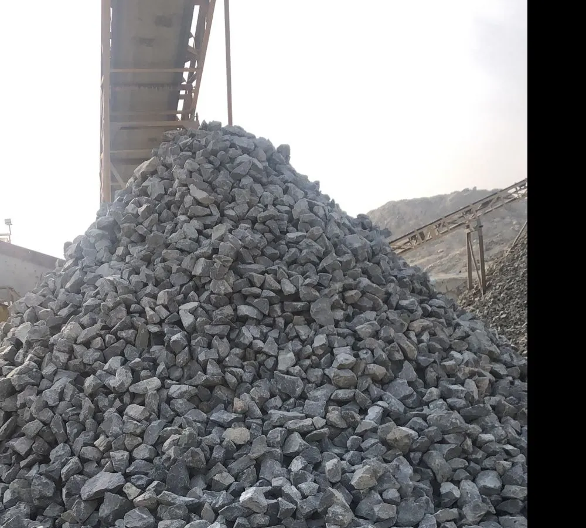
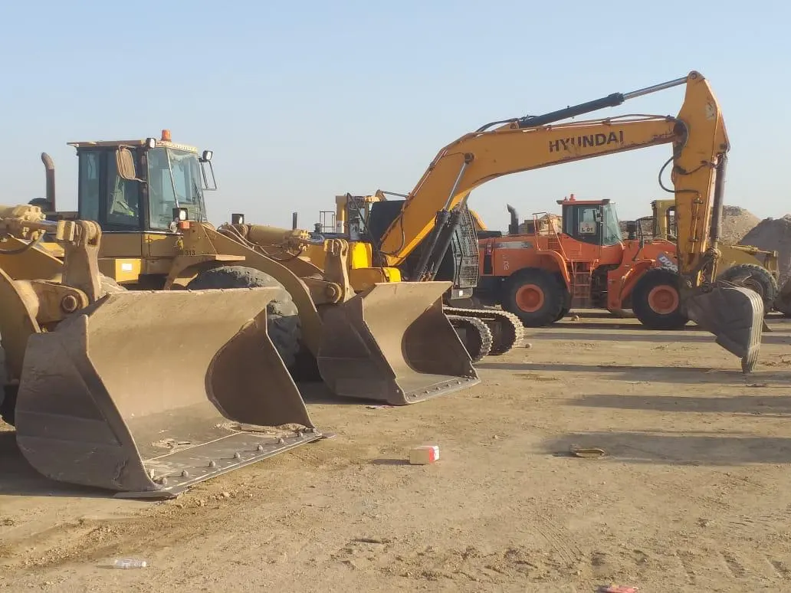
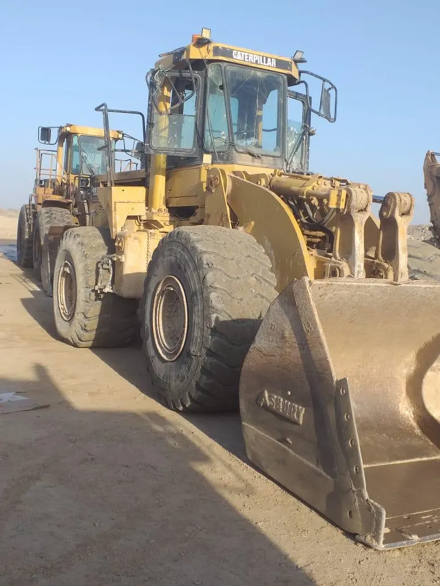
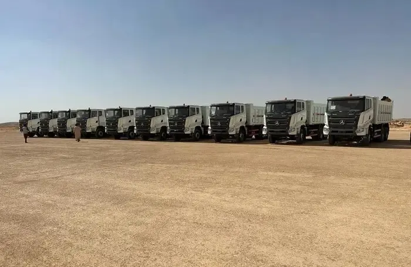
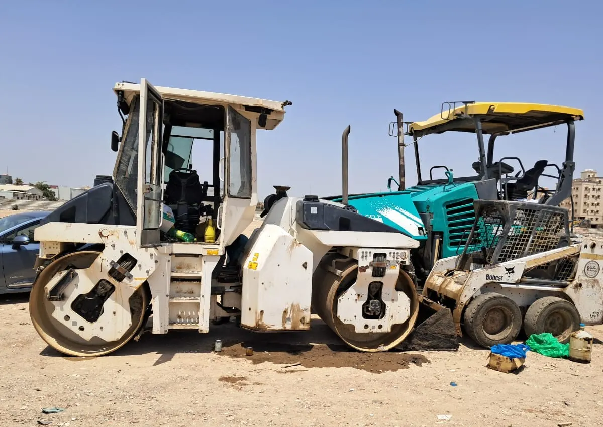
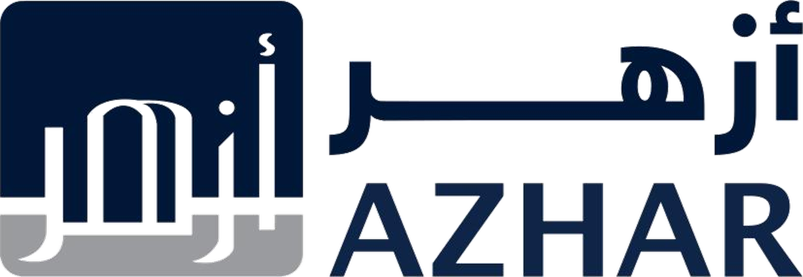
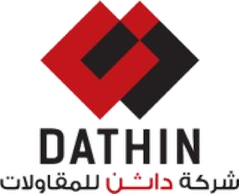

01 / Sand & Fill Material
Site Fill & Backfilling
Engineered fill materials for leveling, backfilling, and site preparation works.
Delivering roads, asphalt, drainage, road marking, external works, civil execution, and infrastructure support through field-proven operational capability.
HORIZON INTEGRATION is a Saudi infrastructure and execution company specialized in roads, asphalt, drainage systems, external works, road marking, civil execution, and urban development support works.
The company operates through a practical delivery model built around equipment readiness, execution discipline, technical coordination, and reliable site performance.
Practical execution capability aligned with real site operations and delivery requirements.
Equipment, materials, manpower coordination, and disciplined site performance.
We support infrastructure and urban development through integrated field execution capabilities covering roads, asphalt, drainage, external works, road safety systems, and operational site delivery.
Integrated field execution systems.
Real asphalt paving, surface preparation, compaction, and completed road marking operations.
Stormwater infrastructure, drainage channels, underground systems, and water management works.
Interlock, sidewalks, urban finishing, public realm works, and hardscape execution.
Traffic guidance systems, thermoplastic marking, parking layouts, and surface safety solutions.
Operational fleet supporting earthworks, asphalt operations, excavation, and site execution.
Integrated civil and infrastructure support works for urban and development environments.

Paving, compaction, bitumen support, and road marking operations executed through integrated field coordination and real operational deployment.
Integrated asphalt execution workflow covering surface preparation, tack coat application, paving operations, compaction, and final urban road finishing through coordinated field execution capability.
Project-based material support for infrastructure execution, covering backfilling, road base, sub-base, selected earthwork materials, and filter stone requirements aligned with project scope and site readiness.




A visual support layer highlighting how infrastructure works contribute to cleaner urban environments, pedestrian-friendly public spaces, landscape integration, and improved city experience.
Supporting external urban environments through landscape coordination, pathway integration, public realm finishing, and visually enhanced infrastructure surroundings.
A concise visual bridge between heavy infrastructure execution and the finished urban environment.
Execution of interlock paving works for pedestrian zones, access routes, and urban interfaces.
Supporting traffic organization, drainage control, and surface edge definition across external areas.
Enhancing urban environments through coordinated landscape and external finishing works.
Improving pedestrian experience and visual continuity across public-facing external environments.
Field-ready fleet resources supporting equipment deployment, bulk transportation, earthworks, loading operations, compaction support, and project-based logistics requirements.

Heavy-duty excavation resources supporting earthworks, site preparation, trenching, and infrastructure operations.

Loading and material-handling equipment supporting site movement, stockpile handling, and field operations.

Bulk hauling fleet supporting material transport, earthwork logistics, aggregate movement, and site delivery needs.

Compaction equipment supporting road layers, backfilling works, surface preparation, and site finishing activities.
Real operational deployment across roads, asphalt, drainage, logistics, lighting support, equipment mobility, and infrastructure field works.
Built through reliable execution relationships across contracting, infrastructure, industrial and specialized project environments.


Supporting infrastructure delivery through operational discipline, execution readiness, coordinated field deployment, and reliable project support capabilities across Saudi Arabia.